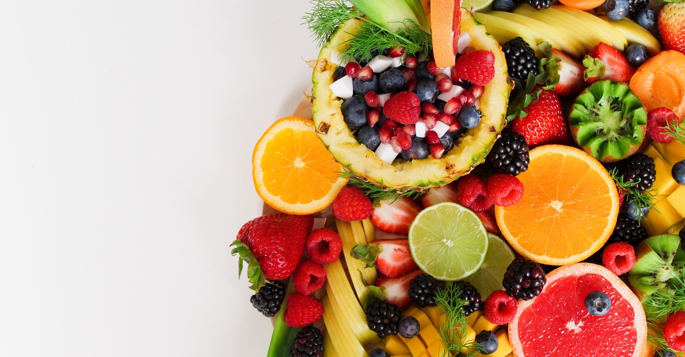
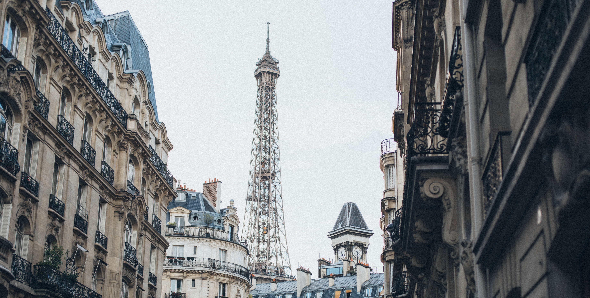

John Doe
Kushtia, Bangladesh
Do you like free pizza and are you interested in biology? Come join the University of Iowa’s Biological Interest Organization (UIBIO) for a pizza social meet-and-greet on Wednesday,
14 articles written by John Doe
Food Photography
For last few years I have this yearning to have a personal blog — a place to gather what inspires me and what helps me grow and also a place to play & experiment, to photograph and to tell stories. Finally I can say that it's here. Wholehearted delights is a
#Photography #PortfolioBy King Rayhan
ELEGANT, SIMPLE & MINIMALIST BLOG MADE WITH LOVE
For last few years I have this yearning to have a personal blog — a place to gather what inspires me and what helps me grow and also a place to play & experiment, to photograph and to tell stories. Finally I can say that it's here. Wholehearted delights is a
#Photography #PortfolioBy King Rayhan
BEAUTIFUL DAY WITH FRIENDS IN PARIS

For last few years I have this yearning to have a personal blog — a place to gather what inspires me and what helps me grow and also a place to play & experiment, to photograph and to tell stories. Finally I can say that it's here. Wholehearted delights is a
#Photography #PortfolioBy King Rayhan